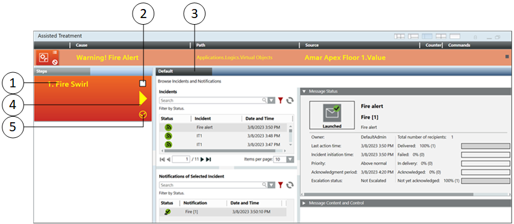
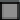
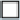
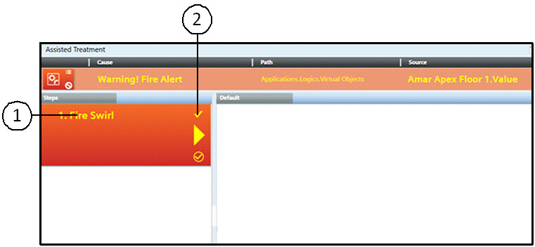
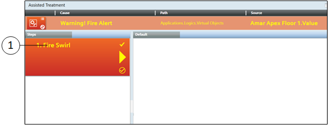
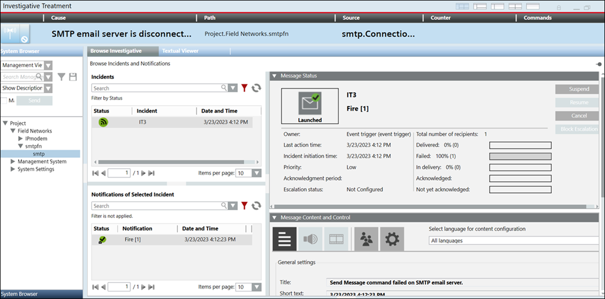
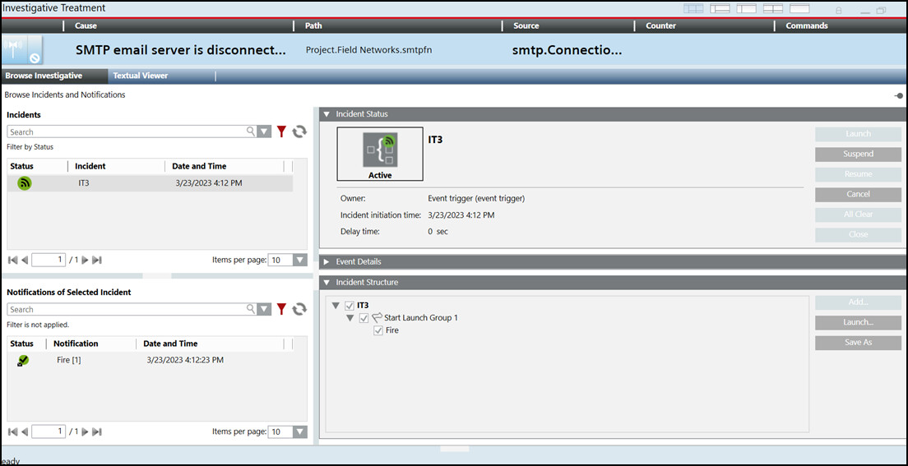
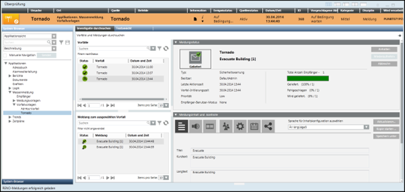

Notification Operating Procedures
Operating procedures are triggered by events that match certain criteria defined in the operating procedure templates.
Assisted Treatments are used in the management station to guide the user to perform operating procedure steps manually to treat events and to prevent tasks from being forgotten under stressful conditions.
Notification allows the initiation of incidents either manually or automatically as a part of an operating procedure. There are three step execution modes:
- Manual - the operator executes the step manually
- Automatic on creation - the step is executed automatically as soon as an event associated with the operating procedure occurs in the system
- Automatic on first treatment - the step is executed automatically, once the user double-clicks on the event and the Assisted Treatment windows are displayed
The Assisted Treatment window allows you to perform either mandatory and / or optional steps to complete an event treatment. The event treatment support includes:
- Operating procedure steps list
- Initiation of associated incident templates
- Launching of associated message templates
For information on initiating an incident from an operating procedure, see Initiating an Incident from an Operating Procedure.
Notification Operating Procedures Workspace
The operating procedure feature allows the user to perform an Assisted Treatment for each execution mode. The following images demonstrate an Assisted Treatment for all the execution modes.
- Assisted Treatment for Manual Execution Mode

| Name/Icon | Description |
1 | Title | Displays the name of the Notification operating procedure step configured for manual execution mode, for example, Fire Swirl. |
2 |  | Select this box to mark the step as executed only after you have completed all the required operations. To mark as step as complete, you must first complete the all the required operations such as initiating an associated incident, and so on. |
3 | Default | Displays the details for initiating an incident template through operating procedures. |
4 | Graphically indicates that the step is selected and the related application is available in the Default tab. | |
5 | Displays that the step is in progress. |
After clicking Initiate, the Browse Incidents and Notifications pane displays:
| Name/Icon | Description |
1 | Title | Displays the name of the Notification operating procedure step configured for manual execution mode, for example, Fire Swirl. |
2 |  | Select this box to mark the step as executed. Selecting this box indicates that the operating procedure step is complete. |
3 | Default | Displays the details for initiating an incident template through operating procedures. |
4 | Displays that the step is successfully executed. |
- Assisted Treatment for Automatic on Creation Execution Mode

| Name/Icon | Description |
1 | Title | Displays the name of the Notification operating procedure step configured for manual execution mode, for example, Fire Swirl. |
2 | Indicates the completion of an operating procedure step. This icon displays after you have marked the step as executed. |
- Assisted Treatment for Automatic on First Treatment

| Field | Description |
1 | Title | Displays the name of the Notification operating procedure step configured for automatic on first treatment execution mode, for example, Fire Swirl. |
Investigative Treatment
Triggering incidents is a mechanism for automatic initiation of incidents based on the events occurring in the system. No human interaction is required for initiating the incident.
Generally, the operator is not involved in the automatic incident triggering process. A person with engineering permissions can specify triggering rules to filter system events, for example, specifying when the trigger should occur.

NOTE:
When an incident is automatically triggered, an event related to the corresponding incident is displayed in the Summary bar. In addition, the operator can click the event and enter the Investigative Treatment window to determine which incidents were initiated and which notifications were launched.
When the user double-clicks , the incident associated with that event or alarm displays in the Browse Investigative tab.

Browse the details of the associated incident by clicking the incident in the Incidents section.

Browse the details of the notification associated with the corresponding incident by clicking the notification in the Notifications of Selected Incident section.
